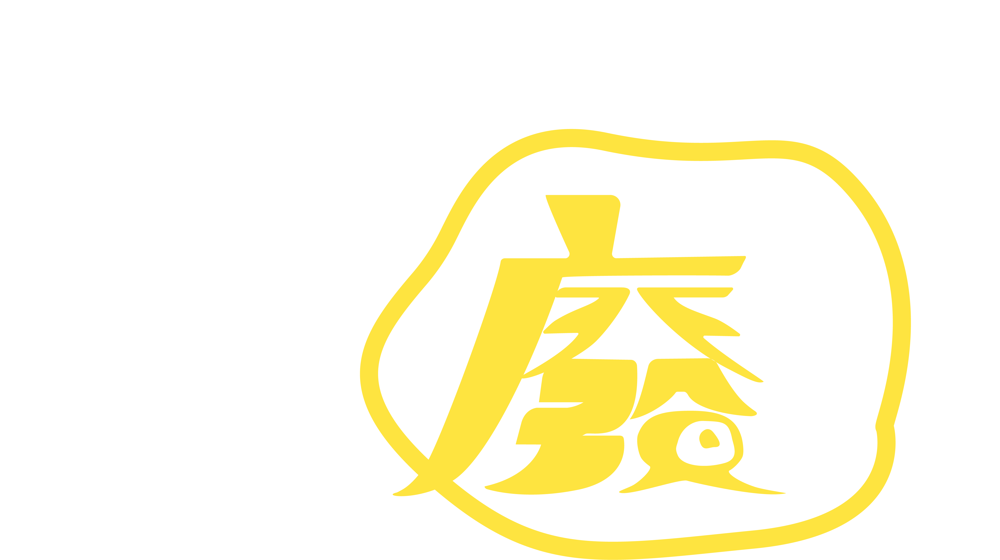

關於我們
廢報，顧名思義廢到爆。這裡集結了我們三人在政大新聞與媒體實驗室、政大大學報產出的報導，秉持「好人有好報，廢人有廢報」之精神，把悲傷留給自己，上課教的留給法賢，廢報留給你。2021年初嚴冬之下，就算錯過也沒關係的優質媒體。

吳冠伶
千禧年生於打狗，貓空寄居中，政大新聞系三年級。喜歡打狗大於貓空，喜歡貓貓狗狗，但貓貓大於狗狗。
吳冠伶
千禧年生於打狗，貓空寄居中，政大新聞系三年級。喜歡打狗大於貓空，喜歡貓貓狗狗，但貓貓大於狗狗。
吳冠伶
千禧年生於打狗，貓空寄居中，政大新聞系三年級。喜歡打狗大於貓空，喜歡貓貓狗狗，但貓貓大於狗狗。
贊助廢報
歡迎匯款至 陳庭寬の創業基金
玉山銀行(808) 0691979145726
玉山銀行(808) 0691979145726
記者｜吳冠伶 徐嘉璟 陳庭寬
指導｜李法賢
copyright©2020 廢報
